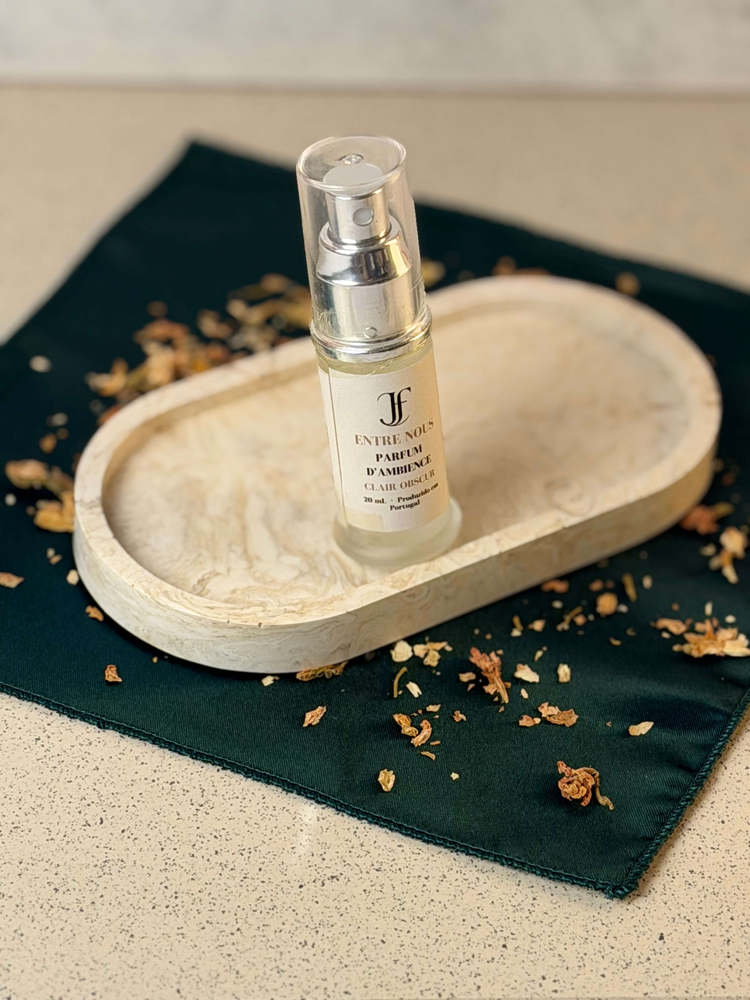

A ponte entre o sensorial e o humano
Árvore, Vila do Conde • Portugal
32 anos de dedicação • Marca em processo de registo • Produção artesanal nacional
A Maison JF™ nasce em Árvore, Vila do Conde, com produção artesanal em pequenos lotes e uma ligação direta ao cuidado, à presença e à criação local. Um projeto português que une produtos sensoriais, acompanhamento individual e uma narrativa construída ao longo de mais de 30 anos.
Uma marca portuguesa nascida de um percurso profundamente humano
A Maison JF™ nasce da necessidade de criar pausas num mundo que não pára. E de um percurso profundamente humano.
Comecei ainda na adolescência, com um baralho de tarot e o contacto com práticas intuitivas como a leitura de mãos. Não sabia onde isso me ia levar. Sabia apenas que queria ajudar pessoas a compreenderem-se melhor.
Ao longo de mais de 30 anos, essa intenção manteve-se. O que mudou foi a profundidade.
Este caminho começou com o envolvimento em projetos de voluntariado através do Instituto Português da Juventude (IPJ), hoje Instituto Português do Desporto e da Juventude (IPDJ). Entre outros projetos, trabalhei no MADI e na Santa Casa da Misericórdia de Azurara.
Mais tarde, já em adulto, esse percurso estendeu-se ao trabalho com populações vulneráveis: imigrantes, pessoas em situação de sem-abrigo e população idosa.
Este percurso levou-me à intervenção direta enquanto Técnico Psicossocial e Técnico de Apoio à Vítima, incluindo trabalho em Casa-Abrigo para vítimas de violência doméstica.
Foi nesse contexto que tudo se tornou mais claro.
A importância de criar espaços seguros.
A importância de escutar sem julgamento.
A importância de parar.
A Maison JF nasce dessa consciência.
Hoje, esse percurso traduz-se em duas formas de cuidado: os produtos, criados manualmente, e o acompanhamento individual.
Duas formas diferentes de fazer o mesmo: ajudar cada pessoa a voltar a si.
A Maison JF™ é a ligação entre duas formas de cuidado. De um lado, os produtos feitos à mão: velas, óleos, sprays, mikados e outros gestos sensoriais. Do outro, o acompanhamento: o tarot, a escuta, a orientação.
Aqui, o sensorial não é um detalhe. É uma forma de voltar ao corpo, ao espaço e ao tempo.
Desenvolvida em Portugal, com produção artesanal, a marca valoriza a criação local e traduz um percurso humano em experiências reais de bem-estar e equilíbrio.
Clair Obscur • Entre Nous
Feito à mão em pequenos lotes em Árvore, Vila do Conde.
Clair Obscur nasce do contraste entre luz e sombra. Entre o exterior e o interior. Entre o ritmo do mundo e o silêncio necessário para voltar a si.
Entre Nous, “entre nós”, é a expressão mais íntima desta coleção. Foi criada para momentos de regresso. Chegar a casa, desacelerar, criar um espaço de acolhimento e presença.
Um momento teu.
Entre Nous.
De ti, para ti.
Cada peça desta coleção é pensada como um gesto simples que transforma o ambiente e convida ao cuidado.

Spray perfumado para ambiente • 20ml • Álcool de Perfumista + Essências
Um gesto imediato que transforma o espaço. Cria uma atmosfera envolvente, íntima e acolhedora. Perfuma instantaneamente. Formato prático para casa ou em viagem.
Difusor de ambiente com varetas • 50ml / 100ml / 200ml / 300ml • Augeo + Essências
Difusão contínua e subtil que mantém o espaço perfumado ao longo do tempo. Ideal para entrada, casa de banho ou zonas de passagem.
Vela perfumada artesanal • 150g • Cera de Soja • Cera de Coco • Essências
Luz suave e aroma envolvente que convidam à pausa e criam um ambiente de conforto e presença. Queima limpa de mais de 35 horas.
Sachet aromático • 20g • Kaolin • Fragrâncias
Pequenos detalhes que permanecem no tempo e trazem delicadeza ao quotidiano. Roupa que cheira bem, sem perfume direto.
Óleo de massagem corporal • 60ml • Óleo de Jojoba • Óleo de Semente de Uva • Fragrâncias • Vitamina E
Uso corporal e sensorial
Nutre a pele e promove relaxamento. Um cuidado que convida à reconexão com o corpo. Absorção média. Não fica gorduroso. Pode ser usado também como óleo de banho.
Vela de massagem • 90g • Manteiga de Karité • Óleo de Semente de Uva • Essências • Vitamina E
Formulada com manteigas e óleos selecionados para contacto direto com a pele. Formato pensado para várias utilizações, mantendo a intensidade da experiência.
A cera transforma-se em óleo quente ao toque, criando uma experiência sensorial de cuidado e proximidade. Nutre a pele e prolonga o momento.
Ritual de escalda-pés • 180g • Sal • Sal de Epsom • Fragrâncias • SLSA
Embalado em saco de papel, pensado para reduzir desperdício e manter a leveza do ritual.
Um momento de pausa para o final do dia. Ajuda a libertar tensões e a acalmar a mente.
Cartas intuitivas colecionáveis
Um convite à introspeção e à escuta interior. Cada carta apresenta uma pergunta que desperta consciência e promove reflexão.
Clair Obscur • Éclosion Mère • Edição Especial Dia da Mãe
Placa perfumada artesanal em cera vegetal
Peça moldada manualmente, com elementos florais naturais. Liberta aroma de forma gradual e subtil. Cada unidade é única.
Wax melts artesanais em forma de coração • 10 pequenos corações perfumados
Derretem lentamente, libertando um aroma envolvente e acolhedor. Edição limitada com inclusão de folha de ouro.
Cápsula sensorial artesanal
Objeto íntimo concebido como convite à pausa e reconexão. Contém pétalas de jasmim, uma pedra semipreciosa e uma mensagem escrita.
Cada cápsula é preparada manualmente. Pensada para oferecer ou guardar como gesto pessoal.
Diferentes práticas utilizadas como ferramentas de escuta, reflexão e orientação
Disponíveis em:
Presencial
Online (videochamada)
Chamada de áudio
Resposta escrita (email, WhatsApp ou Telegram)
As respostas escritas são preparadas com tempo e cuidado, sendo enviadas até 3 dias após confirmação de pagamento.
As consultas são confirmadas após pagamento. Cada consulta é adaptada ao momento e à necessidade de cada pessoa.
Até 17 minutos
Questões concretas. Respostas diretas. Ideal para decisões imediatas ou momentos de dúvida pontual. Leitura clara, objetiva e focada no essencial.
Até 62 minutos
Panorama completo: amor, trabalho, direção pessoal. Leitura abrangente que permite compreender diferentes áreas da vida e a forma como se interligam.
Até 62 minutos
Foco em padrões emocionais e ciclos repetitivos. Para quem procura aprofundar processos internos e compreender repetições na vida.
Entre 35 e 62 minutos
Conversa orientada para equilíbrio pessoal. Sessão focada em decisões, clareza e alinhamento interno, sem utilização de cartas.
Programa contínuo com sessões semanais
Suporte contínuo, com acompanhamento entre consultas e orientação ajustada ao momento. Pensado para quem quer trabalhar processos com consistência e continuidade.
Percurso estruturado
Desenvolvimento da intuição e integração da espiritualidade no dia-a-dia. Programa orientado para quem deseja aprofundar prática e consciência pessoal.
Todas as práticas são orientadas para o bem-estar e desenvolvimento pessoal, não substituindo acompanhamento médico ou psicológico.
Para momentos de crise, decisões urgentes ou quando a cabeça não para.
Disponibilidade limitada para garantir qualidade e presença em cada acompanhamento. Esta modalidade oferece suporte de curta duração para situações específicas que exigem clareza, presença e orientação imediata.
Indicada para momentos de instabilidade emocional, decisões urgentes ou fases de maior intensidade.
Como funciona
Contacto diário breve por mensagem
Chamadas pontuais nos dias definidos
Orientação ajustada ao momento
O acompanhamento SOS é uma modalidade pontual e intensiva. Não substitui sessões completas nem programas de acompanhamento contínuo.
Pedir Ajuda AgoraDisponível todos os dias, das 9h às 21h
Resposta em menos de 2 horas
Nem tudo precisa de estar exposto.
Algumas experiências da Maison JF™ são criadas de forma mais íntima, combinando produtos e acompanhamento de acordo com o momento de cada pessoa.
São propostas pensadas para quem procura mais do que um produto ou uma consulta isolada. A Maison JF™ é um espaço de cuidado contínuo, presença e reconexão.
Disponíveis mediante pedido.
Descobrir ExperiênciasHistórias de quem já se cruzou com a Maison JF
“Conheço o JF há mais de 10 anos. Já fui cliente de tarot, agora sou cliente dos produtos. É raro encontrar alguém que combine tanta sensibilidade com tanta praticidade.”
Cliente de longa data
“A consulta de tarot não foi o que eu esperava. Foi melhor. Não me disse o que queria ouvir, disse o que precisava. E acertou em tudo.”
Tarot Integrativo
“A vela de massagem parecia um luxo desnecessário até experimentar. Agora é o nosso ritual de domingo. A pele fica incrível e o cheiro na casa…”
Bougie de Massage
“O acompanhamento mensal mudou a minha forma de estar no mundo. Não é terapia, é mais prático. É ter alguém que te lembra do teu poder quando tu esqueces.”
Acompanhamento Permanente
“Comprei o escalda-pés num impulso e agora não vivo sem. É o meu ritual de domingo. O JF devia chamar-lhe ‘terapia em saqueta’.”
Bain de Pieds
“O SOS salvou-me. Estava em pânico com uma decisão de trabalho e, em 30 minutos, o JF ajudou-me a organizar a confusão. Não sei como lhe agradecer.”
Consulta SOS
“Não sou uma marca grande.
Sou eu, num atelier em Árvore, Vila do Conde, a fazer o que sei fazer há 32 anos.
Se tiveres uma dúvida, manda mensagem. Respondo eu próprio.
Se demorar um bocadinho, é porque estou a fazer velas, a criar algum produto ou a atender alguém.
Mas respondo.
Obrigado por estares desse lado. A sério. Faz diferença.”